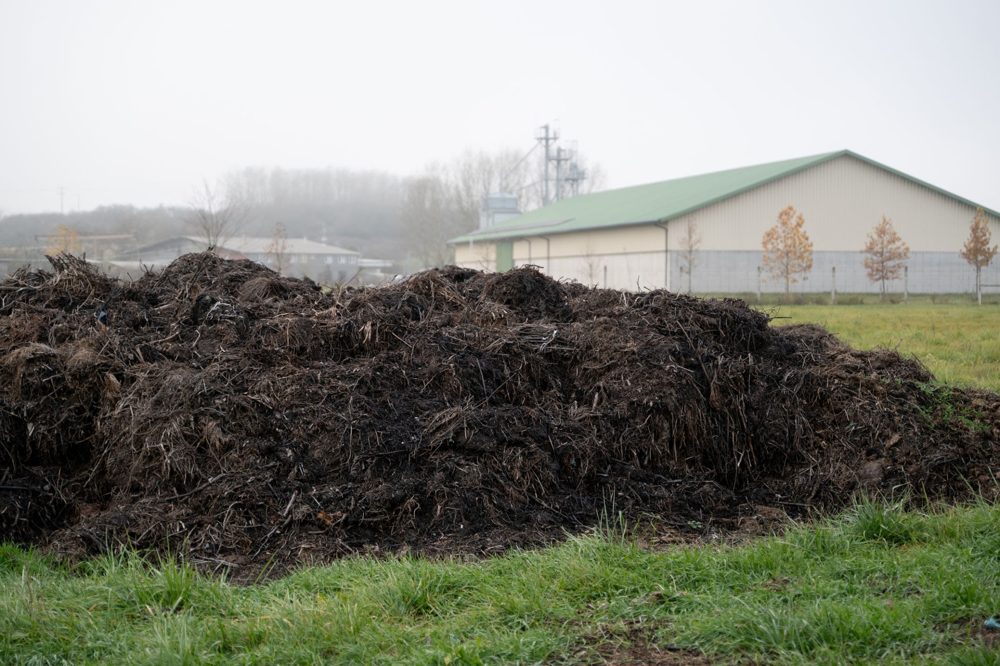
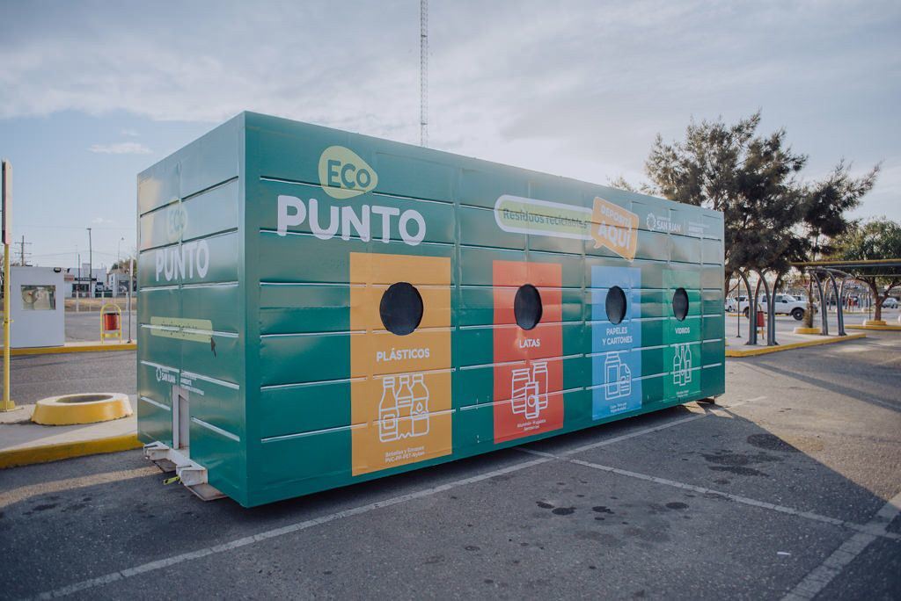
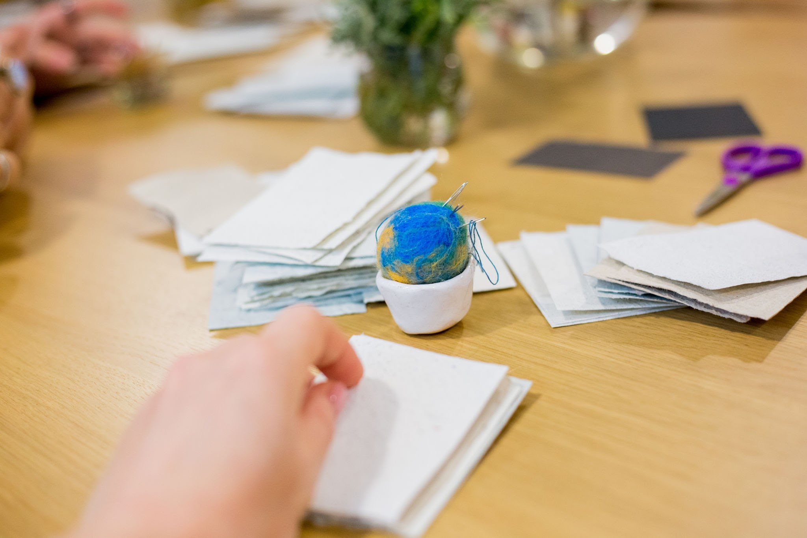

En BioImpact transformamos el concepto
de basura en recursos valiosos mediante
la economía circular. Conocé nuestras 3 líneas de acción:
1. Compostaje Orgánico a Gran Escala

Instalamos centros de compostaje optimizados
en instituciones y barrios para procesar
los desechos orgánicos de cocina y jardín.
El abono resultante, rico en nutrientes,
se redistribuye para fertilizar huertas
comunitarias y regenerar suelos degradados
de la zona.
2. Puntos de Reciclaje y Ecopuntos

Montamos estaciones de separación en origen
clasificadas por materiales: plásticos,
cartones, vidrios y metales. Coordinamos
la recolección directamente con
cooperativas de recicladores locales para
garantizar que los materiales se reinserten
eficazmente en la industria.
3. Talleres de Supra-reciclaje (Upcycling)

Dictamos capacitaciones abiertas donde enseñamos
a transformar residuos no reciclables
tradicionalmente en nuevos productos de alto
valor. Convertimos plásticos de un solo uso en
mobiliario urbano, telas en desuso en bolsas
ecológicas y maderas en juguetes.